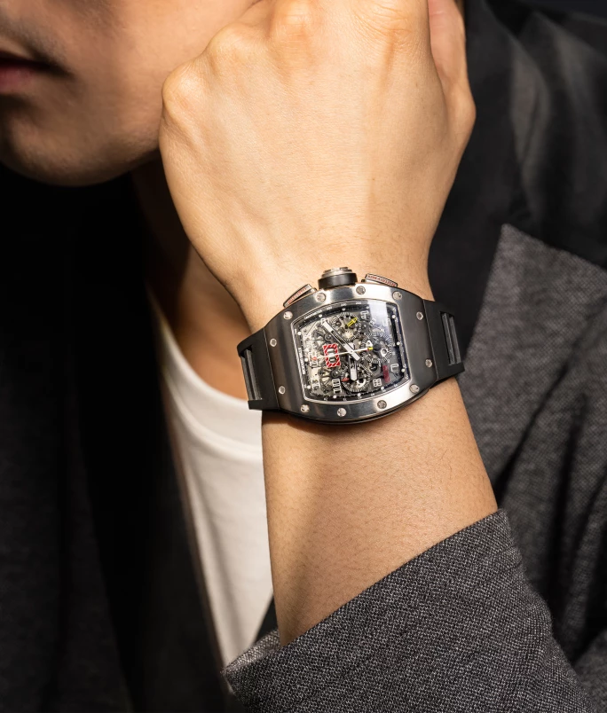
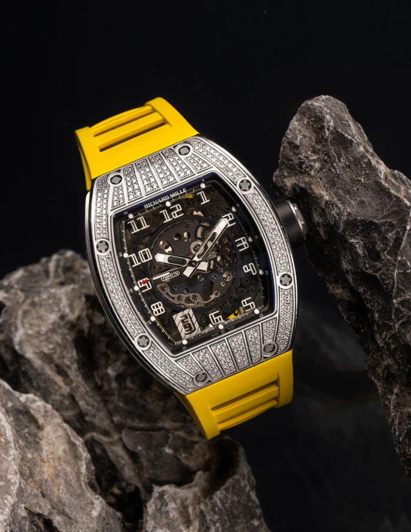
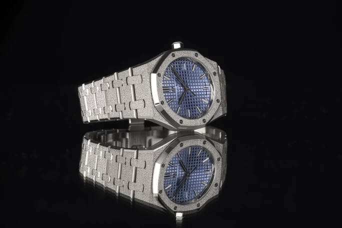

譯自 Caleb Anderson · Sotheby's Hong Kong · 2023年3月17日
三款別具玩味的運動腕錶將於今年香港春季拍賣登場。
運動腕錶以內置超卓性能和堅固特性著稱，近年更成為奢侈品市場的主打產品。隨著技術發展，複雜腕錶的功能越加精良，當中的創意設計亦不斷演化，層出不窮。在奢華運動腕錶的界別中，當今大行其道的款式可說是玩味十足的實驗性設計。
運動腕錶興起，運動風格的時計更見普遍，一改市場局面。藏家和愛好者對多功能時計趨之若騖，鐘錶製造商和零售商亦隨之為時計配備眾多功能，以滿足需求。這股趨勢在奢侈品市場方興未艾，百達翡麗和勞力士等品牌的運動腕錶近年價格也越來越高。隨著運動腕錶越見流行，Richard Mille 和愛彼等品牌先鋒踴躍創新，不斷試驗，打造出大膽好玩的運動腕錶。
春天將至，萬象更新，全新時尚季節亦即將開鑼。臨近蘇富比香港春季拍賣，我們藉機深入了解幾枚運動腕錶臻品。
Richard Mille Felipe Massa，型號RM011 AH Ti，約 2007 年製

Richard Mille | Felipe Massa 型號RM011 | 鈦金屬半鏤空年曆飛返計時腕錶，備日期顯示，約2007年製 | 估價 1,200,000-2,000,000 港元
巴西一級方程式賽車手菲利比·馬沙（Felipe Massa）的出色表現叫人喝采，啟發了 Richard Mille RM011 AH Ti型號的設計。這枚腕錶不但體現馬沙的賽車精神，而且經特別設計，切合馬沙的賽車風格，能承受這位冠軍在賽道上風馳電掣的速度。
RM011採用Richard Mille經典的鈦金屬酒桶形錶殼，尺寸為 41.4 毫米乘49.5 毫米，厚度為 16.4 毫米。一如 Richard Mille 的經典設計，錶殼由螺絲固定，配備超大錶冠和計時按鈕。黑色硫化橡膠透氣錶帶經霧面打磨，與錶殼融為一體。
半鏤空鈦金屬錶盤細節豐富巧究，配備三個計時子錶盤，與時標和碳纖維測速計相襯。12 時位置正下方的日期顯示窗採用紅白相間的邊框，確保日期顯示窗與錶盤的其他細節形成對比，清晰易讀。另外，月份視窗位於 4 時和 5 時之間，足見腕錶的年曆功能完善。RM-011機芯的飛返計時功能通過錶殼上的按鈕操作，即使在一級方程式賽車等高風險的情況下，仍能精確測量時間。
Richard Mille，RM010 AI WG型號，約 2010 年製

Richard Mille | 型號 RM010 | 白金鑲鑽石半鏤空腕錶，備日期顯示，約2010年製 | 估價 900,000-1,200,000 港元
為了迎合市場不斷變化的品味，Richard Mille推陳出新，繼推出 RM005 後，在 2006 年再首度推出 RM010，為往後眾多型號的技術理念奠定基礎。
這款腕錶採用酒桶形錶殼，長 48 毫米、闊 39.30 毫米、厚度為 13.84 毫米。白金打造的錶殼鑲滿鑽石，標誌性的 Richard Mille 螺絲相間其中。這個白金鑲鑽石的設計非常獨特，尤其是搭配鮮黃色硫化橡膠錶帶，為Richard Mille固有的前衛剛猛形象別添一份奢華玩味。
腕錶的鑽石錶殻閃爍璀璨，內建半鏤空錶盤，綴以黃色調的細節，巧妙呈現高低層次，為腕錶增添輕鬆迷人的魅力。時間和日期顯示的錶盤以 5 級鈦合金製成底板和橋板，令本來已經精美獨特的顯示更具運動感和功能性。驅動腕錶的自動機芯 RMAS7 在錶盤下隱約可見，大家還可以透過錶背蓋觀賞Richard Mille自主研發的可變幾何結構擺陀。
愛彼「皇家橡樹」，77353BC.GG.1263BC.01 型號，約 2021 年製

愛彼 | 皇家橡樹系列 型號77353BC.GG.1263BC.01 | 霜白金鏈帶腕錶，備日期顯示，約2021年製 | 估價 450,000-600,000 港元
愛彼敢於創新，反覆試驗，開創先河的「皇家橡樹」在運動腕錶界中傲視同儕，引入許多至今堪稱經典的特色設計。每枚「皇家橡樹」腕錶，包括這次欣呈的型號，都是愛彼精神的完美體現。
這款腕錶在2021年面世，淺藍色錶盤和錶圈的獨特質感為不少錶迷帶來驚喜。它屬於愛彼「皇家橡樹霜金」系列，該系列在2016年誕生，慶祝愛彼「皇家橡樹」女裝腕錶系列四十週年。本品採用的錘擊飾紋如今已經成為愛彼品牌的特色。這種工藝又稱為「佛羅倫斯技術」(Florentine Finish)，由一位與愛彼合作多年的佛羅倫斯珠寶匠家族第四代傳人Carolina Bucci鑽研而來。這次上拍的皇家橡樹系列霜金腕錶展現這種精湛獨特的錘擊技術，錶身呈現如鋪滿鑽石粉塵般的閃耀效果。
34 毫米的錶殼和錶帶採用 18K 白金，絢麗迷人，經潤飾處理的錶面隨光線變化而生出不同光彩。錶圈上的八顆螺絲是「皇家橡樹」的特色，而錶冠經亮面拋光，與閃閃發光的錶面互相輝映，折射出耀眼光芒。錶殼厚度僅為 8.8 毫米，具備 50 米防水性能，堅固而不失精緻。
淺藍色 Tapisserie 格紋圖案錶盤亦令腕錶在光線灑落時更顯生動活潑。白金時標位於錶盤邊緣，帶有螢光塗層的皇家橡樹指針指示時間，自動上弦機芯 5800 為腕錶提供動力。除此以外，這枚珍罕的「皇家橡樹」腕錶還在 3 時位置設有淺藍色日期顯示，內裡的黑色數字簡潔低調，與其他精細繁複、別具玩味的部分形成鮮明對比。